שמרתי
כל מה ששווה לזכור, במקום אחדשומרים סרטונים מטיקטוק, אינסטגרם ויוטיוב, אתרים וכל קישור. כל שמירה מקבלת תמונה, תיאור שלכם וקטגוריה, כדי שתמצאו אותה גם בעוד שנים.
הורד 13 פעמים כל המספרים
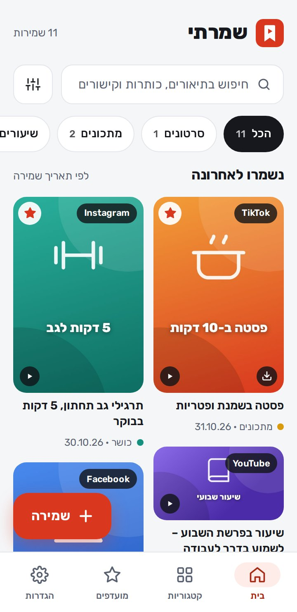
מה חדש
גרסה 1.2- שיתוף האפליקציה עם חברים: קישור לאתר עם הודעה קצרה, או האפליקציה עצמה כקובץ בבלוטות', בוואטסאפ או במנהל הקבצים
- שליחת האפליקציה כקובץ עובדת גם בלי אינטרנט
- לשמרתי יש אתר עם הסבר לכל כפתור: luach-sport.github.io/shamarti
עובד גם בלי אינטרנט
- כל השמירות, התיאורים, הקטגוריות והתגיות נשמרים בטלפון, וגם החיפוש והסינון עובדים בלי אינטרנט.
- התמונה של כל שמירה נשמרת בטלפון, ונשארת גם אם הסרטון יימחק מהרשת.
- סרטוני טיקטוק שהורדתם נפתחים בנגן בלי אינטרנט.
- שיתוף האפליקציה כקובץ עובד בלי אינטרנט.
צריך אינטרנט כדי למשוך תמונה וכותרת לשמירה חדשה (אם אין, הן נמשכות לבד אחר כך), כדי להוריד סרטון וכדי לפתוח את המקור.
התקנה
- מורידים
לוחצים "הורדה לאנדרואיד" למעלה. הקובץ shamarti.apk יורד לטלפון.
- מתקינים
פותחים את הקובץ מההתראות או מתיקיית ההורדות. בפעם הראשונה מאשרים "התקנה ממקור לא ידוע".
- שומרים
בטיקטוק, באינסטגרם או ביוטיוב לוחצים "שיתוף" ובוחרים בשמרתי. זהו, נשמר.
אם מופיעה אזהרה של Google Play Protect על אפליקציה לא מוכרת, בוחרים להתקין בכל זאת. זה קורה בכל אפליקציה שלא הורדה מחנות Google Play. את העדכונים הבאים לא צריך להוריד: הם נכנסים מתוך האפליקציה.
איך שומרים
יש שלוש דרכים, וכולן פותחות את אותו חלון "שמירה חדשה" עם הקישור כבר בפנים.
- שיתוף ← שמרתיבטיקטוק, באינסטגרם, ביוטיוב או בכל אפליקציה לוחצים "שיתוף" ובוחרים בשמרתי (לפעמים מסתתר תחת "עוד").
- קישור שהעתקתימעתיקים קישור ונכנסים לשמרתי. למעלה מופיע "יש קישור בהעתקה" עם כפתור "שמירה". ה־✕ מסתיר אותו.
- + שמירההכפתור האדום בתחתית מסך הבית. פותח שמירה חדשה ריקה.
בחלון השמירה
- הדבקהמדביק את הקישור שהעתקתם.
- התמונה והכותרתנמשכות לבד, כמו כששולחים קישור בוואטסאפ. כתוב "זוהה לבד" כשזה הצליח.
- המקורTikTok, Instagram, YouTube, אתר וכו'. מזוהה לבד מהקישור, ואפשר לשנות.
- צילום מסך משלךבוחרים תמונה מהגלריה במקום התמונה שנמשכה. "למשוך שוב" מנסה שוב למשוך את התמונה.
- התיאור שלימה יש פה ולמה שמרתם. השורה הראשונה היא הכותרת, והחיפוש מוצא כל מילה שכתבתם.
- קטגוריהבוחרים אחת, או "+ קטגוריה חדשה" ישר מכאן.
- תגיותלא חובה. כותבים מילה ולוחצים Enter או פסיק. ה־✕ ליד תגית מוחק אותה.
- להוסיף למועדפיםהשמירה תופיע גם בלשונית המועדפים.
- כבר שמרת את זהאם הקישור כבר שמור, מופיעה הודעה עם "לפתוח את מה ששמרת". אפשר לשמור שוב בכל זאת.
- שמירהשומר. אם התמונה עוד לא הגיעה, היא תיכנס לשמירה לבד כשתגיע.
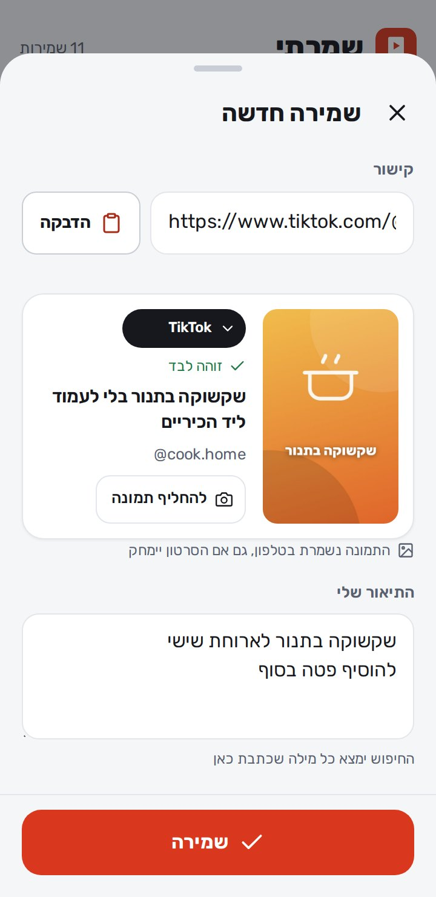
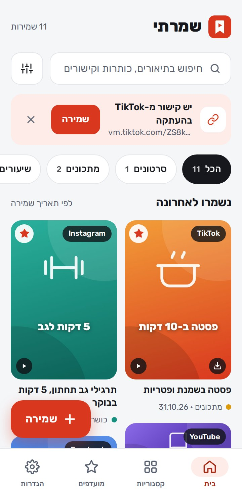
בית
כל השמירות, החדשות למעלה, בשני טורים של תמונות.
- שורת החיפושפותחת את החיפוש. איך מחפשים
- כפתור הסינוןליד שורת החיפוש. פותח את החיפוש עם הסינון לפי מקור, קטגוריה, תאריך ומועדפים.
- הקטגוריות"הכל" או קטגוריה אחת, עם מספר השמירות בכל אחת. "בלי קטגוריה" מראה את מה שעוד לא סידרתם.
- כרטיס שמירההתמונה, הכותרת, הקטגוריה והתאריך. לחיצה פותחת את דף השמירה.
- הסימנים על התמונההמקור (TikTok, Instagram…), ▶ לסרטון, ⬇ כשהסרטון שמור בטלפון, ★ למועדף.
- כדאי לגבותפעם בשבוע מופיעה תזכורת לגיבוי. "גיבוי" שומר קובץ, וה־✕ דוחה בכמה ימים.
- עוד שמירותבתחתית הרשימה, כשיש הרבה שמירות.
- + שמירהשמירה חדשה. איך שומרים
דף השמירה
כל מה ששמרתם על הקישור הזה, וכל מה שאפשר לעשות איתו.
- התמונה הגדולהפותחת את המקור: את הסרטון באפליקציית טיקטוק, אינסטגרם או יוטיוב, או את האתר.
- פתיחה ב-TikTokאותו דבר, ככפתור. השם משתנה לפי המקור.
- ★ למעלהמוסיף למועדפים או מוריד מהם.
- העיפרון למעלהעריכה: הקישור, התמונה, התיאור, הקטגוריה והתגיות.
- הקטגוריהלחיצה עליה מעבירה את השמירה לקטגוריה אחרת.
- #תגיתמחפשת את כל השמירות עם אותה תגית.
- הפרטיםהמקור, מתי נשמר, היוצר והקישור. כפתור ההעתקה מעתיק את הקישור.
- שיתוףכקישור, או את הסרטון עצמו כקובץ. הורדת סרטונים
- העברהלקטגוריה אחרת, או לקטגוריה חדשה.
- מחיקהאחרי אישור. נמחק רק מהאפליקציה, לא מטיקטוק או מהאתר.
- אין עדיין תמונה"למשוך עכשיו" מנסה שוב. בלי זה, התמונה תימשך לבד כשיש אינטרנט.
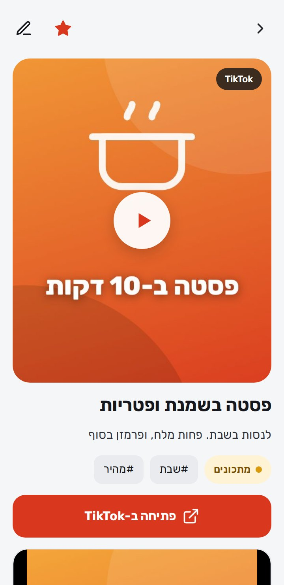
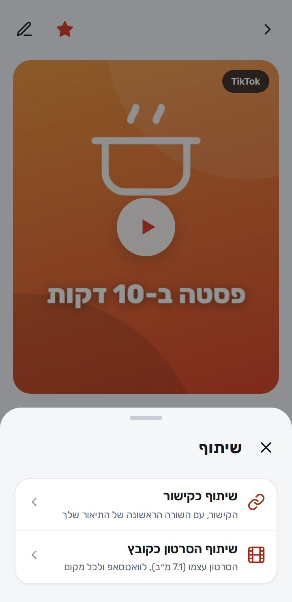
הורדת סרטונים
מורידים את הסרטון לטלפון, צופים בו בלי אינטרנט ומשתפים אותו כקובץ. ההורדה מכבדת את היוצר: אם הוא חסם הורדות, לא מורידים.
- הורדת הסרטון לטלפוןמוריד את הסרטון, עם פס התקדמות. הסרטון יורד עם הסימן של טיקטוק ושם היוצר, כמו ב"שמירת סרטון" של טיקטוק.
- הנגןצפייה בסרטון ישר מהטלפון, גם בלי אינטרנט.
- שיתוף כקובץשולח את הסרטון עצמו, למשל בוואטסאפ, ולא רק קישור.
- שמירה בגלריהמעתיק את הסרטון לגלריה של הטלפון (תיקיית Shamarti). אחרי זה כתוב "בגלריה".
- מחיקת הקובץמפנה מקום בטלפון. השמירה עצמה נשארת, ואפשר להוריד שוב.
- להוריד ולשתף כקובץבחלון השיתוף, כשהסרטון עוד לא בטלפון: מוריד ופותח את השיתוף מיד.
- כשאי אפשר להורידכתוב בדיוק למה: היוצר חסם הורדות, הסרטון פרטי, או שהוא נמחק. במקום זה מופיע "שיתוף כקישור".
- לנסות שובכשההורדה נכשלה מסיבה זמנית (אין אינטרנט, טיקטוק לא עונה). "לשלוח פרטים למפתח" עוזר לתקן.
ההורדה עובדת כרגע לסרטוני טיקטוק. סרטונים מאינסטגרם, יוטיוב ופייסבוק אפשר לשמור ולשתף כקישור.
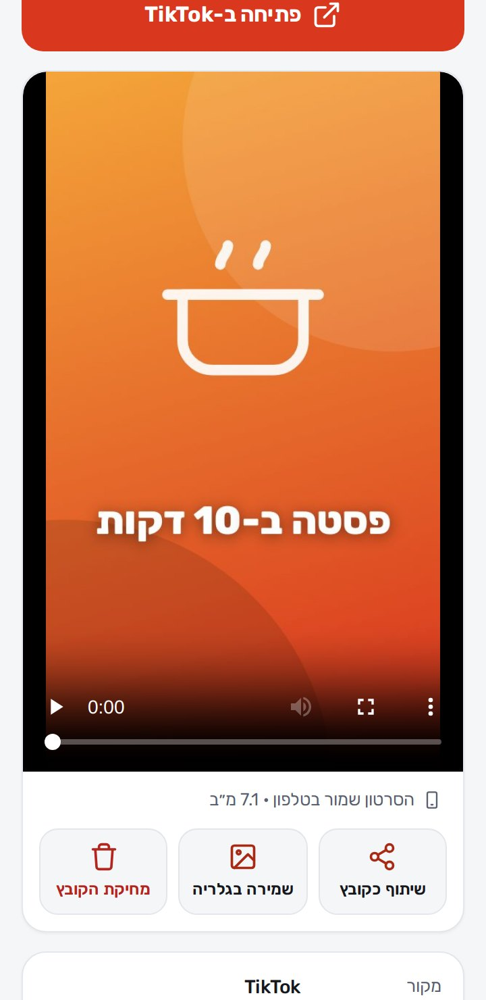
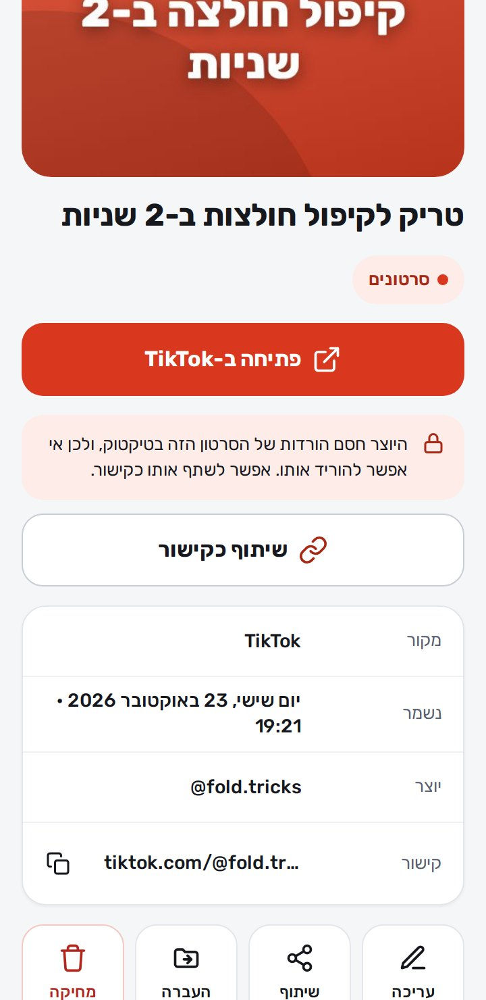
חיפוש וסינון
מוצאים כל שמירה לפי מילה, מקור, קטגוריה או תאריך. אפשר לשלב כמה ביחד.
- מה לחפש?מחפש בתיאור שכתבתם, בכותרת המקורית, בתגיות, בשם היוצר ובקישור עצמו. המילים שנמצאו מסומנות בצבע.
- ✕מנקה את החיפוש.
- מאיפההכל, TikTok, Instagram, YouTube, אתרים או מקור שהוספתם. ליד כל אחד כמה תוצאות יש ממנו.
- קטגוריהקטגוריה אחת, הכל, או "בלי קטגוריה".
- תאריךהשבוע האחרון, החודש, השנה, או לפני יותר משנה.
- מיוןהחדשים קודם, הישנים קודם, או לפי א-ב.
- ★ מועדפיםרק השמירות שסימנתם בכוכב.
- תוצאהלחיצה פותחת את דף השמירה.
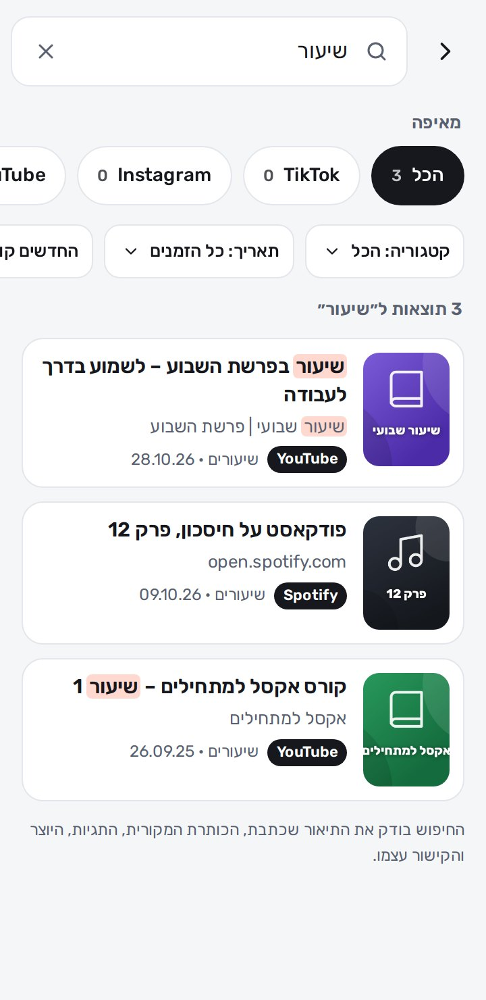
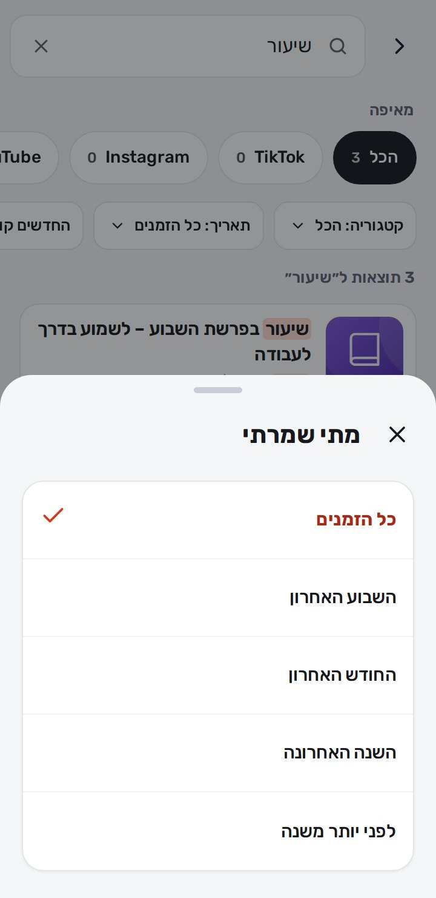
קטגוריות
מסדרים את השמירות כמו שנוח לכם. יש קטגוריות מוכנות (סרטונים, מתכונים, שיעורים, טיפים לבית, כושר, טיולים), ואפשר להוסיף כמה שרוצים.
- לחיצה על קטגוריהמראה במסך הבית רק את השמירות שלה.
- סידור ועריכההחצים מזיזים קטגוריה למעלה או למטה. העיפרון פותח עריכה. "סיום" חוזר.
- עריכת קטגוריהשם, צבע וסמל. "מחיקת הקטגוריה" לא מוחקת שמירות: הן נשארות, בלי קטגוריה.
- + קטגוריה חדשהשם (למשל "לקנות"), צבע וסמל.
- מאיפה שמרתיכמה שמרתם מכל מקור. לחיצה מראה את כל השמירות משם.
- + מקור חדשאפליקציה או אתר שאתם שומרים ממנו הרבה (למשל ynet). כותבים את כתובת האתר, וכל קישור משם יזוהה לבד. במצב "סידור ועריכה" אפשר לערוך או למחוק אותו.
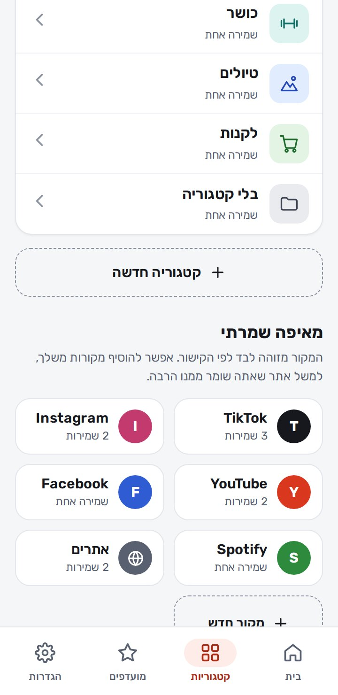
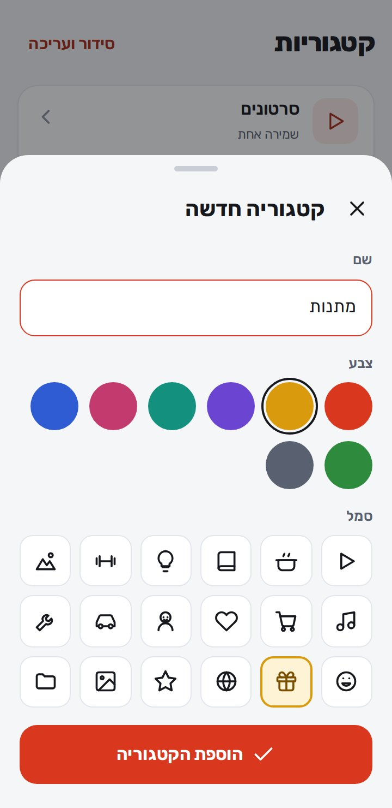
מועדפים
השמירות שהכי חשובות לכם, מכל הקטגוריות, במקום אחד.
- איך מוסיפיםה־★ למעלה בדף השמירה, או "להוסיף למועדפים" כששומרים.
- איך מורידיםלוחצים שוב על ה־★ בדף השמירה.
- כרטיס שמירהכמו במסך הבית: לחיצה פותחת את דף השמירה.
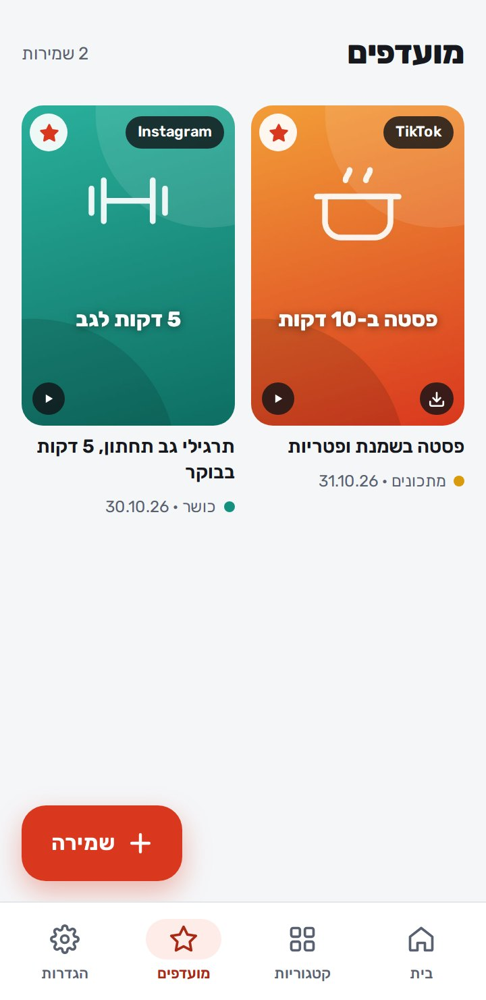
הגדרות
המראה, איך שומרים, גיבוי, ומה עושים כשרוצים לספר משהו למפתח.
- מראהבהיר, כהה, או לפי הגדרת הטלפון.
- זיהוי קישור שהעתקתיכשזה דלוק ונכנסים עם קישור מועתק, האפליקציה מציעה לשמור אותו.
- שמירת תמונת הסרטוןהתמונה נשמרת בטלפון, ונשארת גם אם הסרטון יימחק מהרשת.
- קטגוריה לשמירה חדשהאיזו קטגוריה תהיה מסומנת מראש: האחרונה שבחרתם, בלי, או קטגוריה קבועה.
- גיבוי לקובץכל השמירות והתמונות בקובץ אחד. שומרים אותו בדרייב, בוואטסאפ לעצמכם או במחשב.
- שחזור מגיבויבטלפון חדש, או כדי להחזיר שמירות מקובץ גיבוי.
- תזכורת לגבותהודעה קטנה במסך הבית אם עבר שבוע בלי גיבוי.
- ייצוא לאקסלכל השמירות בטבלה, לפתיחה באקסל או בגוגל שיטס.
- פנייה / הצעת ייעולהודעה ישירות למפתח. איך זה עובד
- בדיקת עדכוניםבודק אם יש גרסה חדשה. עדכונים
- שיתוף האפליקציהקישור לאתר עם הודעה קצרה, או האפליקציה עצמה כקובץ. שיתוף עם חברים
- בתחתיתהגרסה שמותקנת אצלכם, ו"פותח על ידי Itzko".
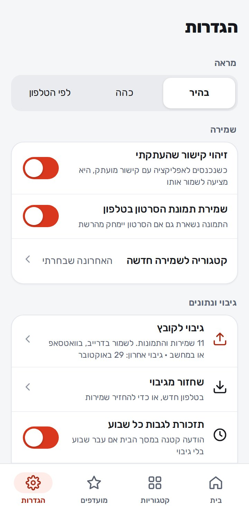
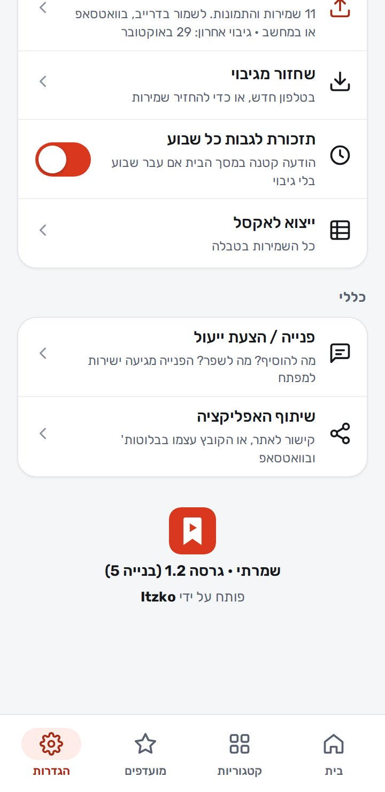
עדכונים
כשיוצאת גרסה חדשה, בפתיחת האפליקציה קופץ חלון "גרסה חדשה" עם רשימה של מה השתנה.
- עדכון עכשיוהעדכון נכנס בתוך האפליקציה, והיא נפתחת מחדש בגרסה החדשה. לא צריך להתקין קובץ, וכל השמירות נשארות.
- הורדת הגרסה החדשהמופיע רק בגרסה שמשנה את המנוע של האפליקציה. מתקינים אותה פעם אחת מעל הקיימת, והשמירות נשארות.
- אחר כךסוגר את החלון. אפשר לעדכן מתי שרוצים.
- בדיקת עדכוניםהגדרות ← כללי ← בדיקת עדכונים
אם רוצים לבדוק בעצמכם.
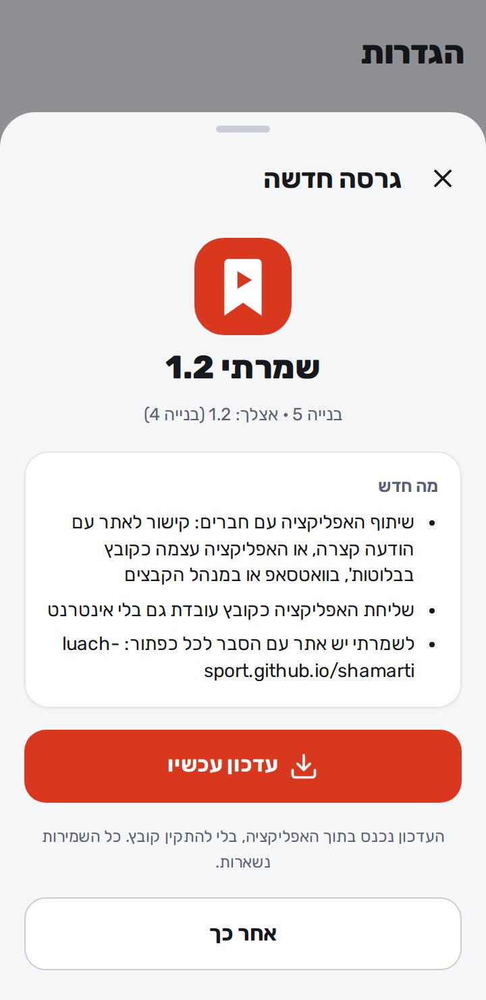
מה מבקשים מכם
להשתמש באפליקציה כרגיל, ולספר מה לא עבד, מה לא היה ברור, ומה חסר לכם.
- איפההגדרות ← פנייה / הצעת ייעול
- מה ממלאיםסוג (הצעת ייעול, תקלה או אחר), שם, מייל, ומה רציתם להגיד.
- שליחת הפנייההפנייה מגיעה ישר למפתח. אם אין אינטרנט, היא נשמרת ונשלחת לבד כשהחיבור חוזר.
- הפניות שלימתחת לטופס רואים כל פנייה ששלחתם, ואם היא כבר נשלחה.
- טיפ לתקלותכתבו מה לחצתם, מה ציפיתם שיקרה ומה קרה בפועל, ואת הקישור אם זה קשור לשמירה מסוימת.
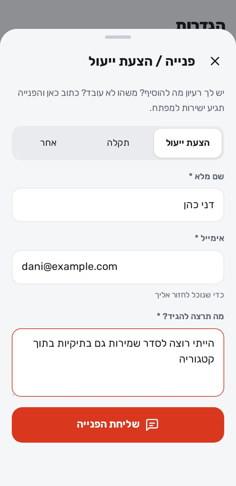
פותח על ידי Itzko
שמרתי היא אפליקציה עצמאית של Itzko: בלי פרסומות, בלי הרשמה, והשמירות שלכם נשארות אצלכם בטלפון. כל רעיון או תקלה מגיעים ישירות אליו דרך "פנייה / הצעת ייעול" בהגדרות של האפליקציה.